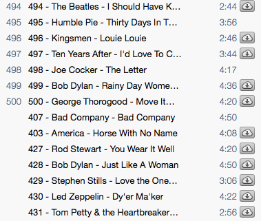
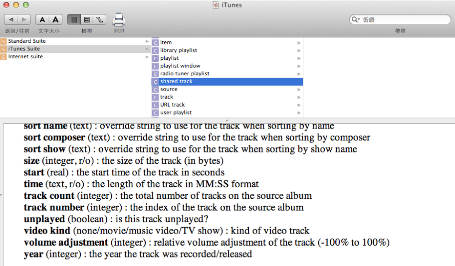

iTunes 11 出來了，界面變簡潔漂亮了，所以就比較有把音樂資料庫整理一下的動力。手上有很久以前下載的 Rolling Stone Magazine’s Top 500 Songs，可惜的是加入 iTunes 資料庫後由於沒有音軌數字的資訊，整個次序都不大對：
手動一個一個改對我來說是不可能的，於是想到了 iTunes 似乎是有提供 AppleScript API 界面的，但第一個問題就是我跟 AppleScript 不熟，於是在網路上搜尋發現有個 Ruby gem 叫 rb-appscript 可以用 Ruby 來做類似的功能，二話不說就 gem install rb-appscript 下來用了。
但接著第二個問題是我跟 iTunes 的 AppleScript API 也不熟，但也很快地發現可以從 AppleScript editor 裡面查到：
於是在 irb 裡小試了一下發現可以成功運作後，就直接動手寫了：
require 'appscript'
Appscript.app.by_name("iTunes").selection.get.each do |t|
t.track_number.set $1 if t.name.get =~ /^(\d+)/
end
哈，大功告成。